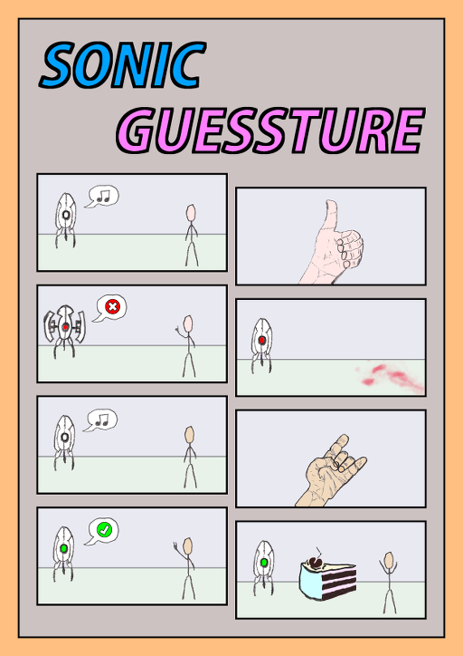

Sonic Guessture[1]Sonic: Schall, schnell, akustisch, Videospielfigur
Guessture: Wortkombination aus 'guess' (raten) und 'gesture' (Geste) ist ein Rätselspiel, das im Wintersemester 2014/15 im Wahlpflichtfach Audio-Video-Programmierung des Studienganges Bachelor Media Systems (B-MS) erstellt wurde.
Aufgabe war es, ein Programm zum Thema 'Gesten steuern Musik' zu entwickeln. Entstanden ist ein akustisches Gestenrätsel.
Der Spieler bekommt bekannte Musikstücke zu hören und muss selbstständig den Bezug zu einer zum Stück passenden Geste herstellen, welche, bei erfolgreicher Ausführung vor der Webcam, das nächste Gestenrätsel freischaltet. Die Leistung des Spielers wird mit Sternen belohnt. Schnell sein und keine optional einblendbaren Hinweise benötigen bringt zusätzliche Sterne.
Beispiel[2]Dieses Beispiel ist kein Spoiler und kommt nicht im Spiel vor. Es dient lediglich der Veranschaulichung der Spielidee.: bei dem Overworld Theme aus The Legend of Zelda soll der Spieler mit den Händen ein Triforce formen.
Es wurden vier verschiedene Gesten programmiert. Technisch wird das Bild der Webcam mittels OpenCV abgegriffen, die Hautfarbe[3]Die individuelle Hautfarbe des Spielers wird zu Beginn einmalig ausgewählt. mittels Color Keying herausgelöst und das resultierende binäre Bitmap auf die jeweilige Geste hin analyisiert. Zeit und Rhythmik sind ebenfalls Faktoren, die für zwei der Gesten eine Rolle spielen. Die Qt-Anwendung verwendet für GUI, Musiküberblendungen, Camera, Color Keying, Bildanalyse und Mediator[4]Mediator-Entwurfsmuster (GoF:273) jeweils eigene Threads, die mittels Nachrichtensystem[5]Qt Signals und Slots miteinander kommunizieren.
Zusammen mit den Projekten der anderen Studierenden dieses Kurses wurde das Spiel am 27.01.2015 ausgestellt. Eine Veröffentlichung von Sonic Guessture ist aufgrund fehlender Musik- und Bildrechte[6]Bilder werden verwendet, um nach korrekter Erkennung der jeweiligen Geste das Rätsel aufzulösen. nicht möglich.
| Sprachen | C++, UML |
|---|---|
| Technologien | Qt 5, Multithreading, OpenCV, Color Keying, Gestenerkennung |
| Tools | GIMP, Dia |
| IDE | Qt Creator |
| Beteiligte | 1 |

{kind=link}